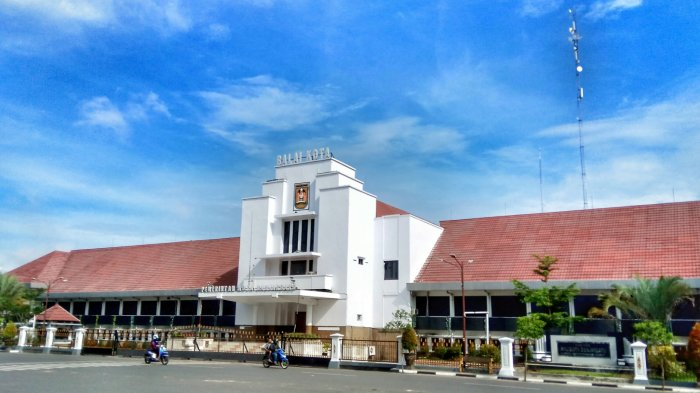
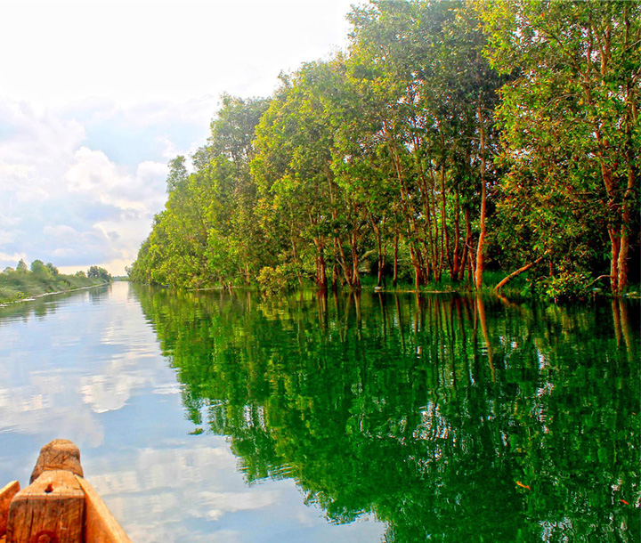
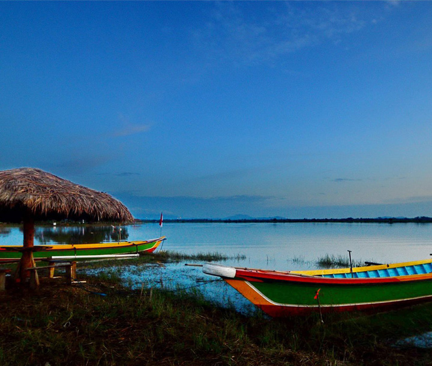
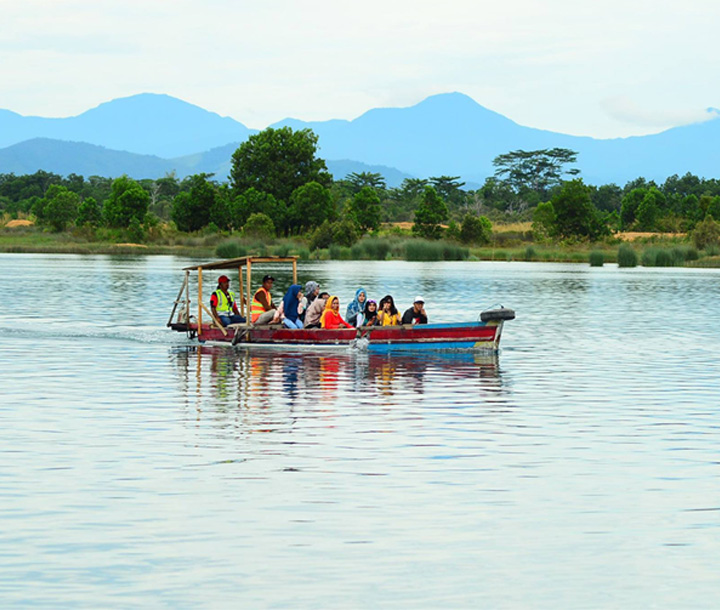
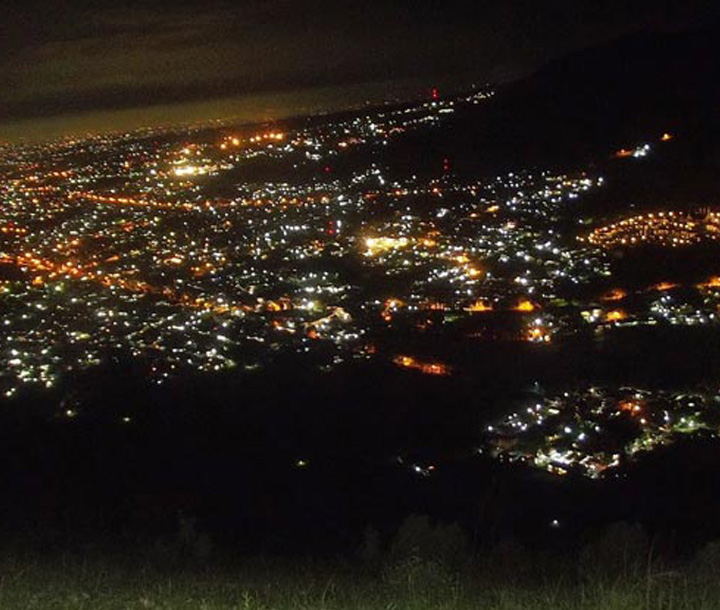

Hayu kita baca barsama-sama...

Wilayah Banjarbaru dulunya adalah perbukitan di pinggiran Kota Martapura yang dikenal dengan nama
Gunung Apam. Daerah Gunung Apam dikenal sebagai daerah persitirahatan buruh-buruh penambang intan
selepas menambang di Cempaka.
Kota ini berada di provinsi Kalimantan Selatan.
Visi
Terwujudnya Banjarbaru Sebagai Kota Pelayanan Yang Berkarakter yang terdiri atas dua aspek
penting yaitu:
- Sumber daya manusia yang berkarakter, yaitu terciptanya sumber daya manusia yang sehat,
mempunyai etos kerja tinggi dan berakhlak mulia berdasarkan nilai-nilai religius.
- Kota yang berkarakter, yaitu sebuah kota yang mempunyai ciri khas sebagai kota yang
tertata/direncanakan (urban design) sehingga menjadi tempat hunian yang indah, aman dan
nyaman yang berwawasan lingkungan.
Misi
- Mewujudkan sumber daya manusia yang terdidik, sehat, berdaya saing dan berakhlak mulia.
- Meningkatkan penyediaan infrastruktur perkotaan yang merata, cerdas dan berwawasan
lingkungan.
- Memperkuat kemandirian, peningkatan kerjasama investasi, penyediaan prasarana dan sarana
perekonomian, peningkatan kelembagaan dan peluang kewirausahaan.
- Melaksanakan reformasi birokrasi yang berorientasi kepada pelayanan publik dan tata
kelola pemerintahan yang baik berbasis teknologi informasi.
- Memperkuat cipta kondisi masyarakat yang aman, nyaman dan tertib.
1 / 4

Penggalaman, Liang Anggang
2 / 4

Danau Galuh, Palam
3 / 4

Danau Caramin, Guntung Manggis
4 / 4

Bukit Lentera, Cempaka
❮
❯